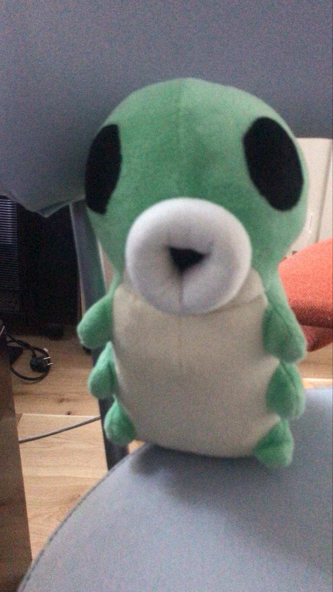

!! classified data — do not share outside La Flea !!
— Half-Life 2 —
Gordon Freemancrowbar1998freeman
Alyx Vancedad_is_fine_trust_mealyx
G-Manriseandshinegman
Dr. Breencitadel_boss_2004breen
Barney Calhounillbuyyouabeerbarney
Eli Vancelambda_lambda_lambdaeli
Dogborkdog
Judith Mossmanbreen_was_rightmossman
Father Grigoriravenholmcallinggrigori
Isaac Kleinerlamarr_where_are_youkleiner
Lamarrhisssssslamarr
Overwatch SoldierCPs4lscp_unit
Vortigauntthe_vortessence_flowsvort
— Portal 1 —
Chell[no record found]chell
GLaDOSthe_cake_was_real_actuallyglados
Companion Cube♥♥♥♥♥♥♥♥cube
Turretimdifferentturret
Defective Turretsorry_im_differentbadturret
— Portal 2 —
Wheatleynotacompleteandtotalmoronwheatley
Cave Johnsoncombustible_lemons_2037cave
CarolineIAmStillAlivecaroline
Atlasbeepatlas
P-bodybooppbody
Space Corespaaaaaaacespacecore
Fact Coreactually_that_is_incorrectfactcore
Adventure Coreriiick_im_in_dangerrick
Anger CoreAAAAAAAAAAAAanger
Turret Choircara_mia_addiochoir
Announcerplease_remain_calmannouncer
— La Flea (Real Members) —
Beastling[no password required]beastling
News
HORNET HAS BEEN HURT. SHE IS ALIVE. SHE IS BACK IN THE BUNKER. DO NOT PANIC.22 Mar 2026 — 08:45
breakinghorneturgent
Hornet has returned to the bunker. She is injured. La Flea needs everyone to read that sentence again before continuing: she is back. She is here. She is alive. She walked in under her own power at 08:31. She sat down. She is being looked after. Do not panic.
What we know: Hornet reached the drilling site shortly after 06:00. Scouts who briefly regained visual at 07:40 report the drill is no longer operational and the EA operatives running it are no longer at the site. Whatever happened out there, Hornet handled it. She always handles it. What she could not fully handle was the thing that happened after — something scouts could not see clearly, in the dark, near the east ridge. She came back with a wound to her left side. It is serious but it is not critical. The bunker medic is with her.
The beastling went directly to Hornet the moment she entered. It did not wait. It did not hesitate. It is sitting next to her right now and has not moved. The grub followed shortly after and is on her other side. Nobody told them to do this. They simply did.
Ted has not said a single word since she came in. He is sitting at the desk across the room. His laptop is closed. He is just sitting there. This is the most still Ted has been since the war began.
La Flea wants EA to understand something. You did not stop her. You slowed her down. There is a difference, and you should think carefully about what that difference means before Phase 3 continues.
Hornet is resting. The bunker is quiet. We are all here.
— La Flea News Desk
EA PHASE 3 HAS BEGUN. THEY ARE DIGGING. WE CAN HEAR IT FROM LEVEL 12.22 Mar 2026 — 06:00
breakingwarphase 3
At approximately 05:30 this morning, the walls of level 12 began to vibrate. It was faint at first — a low frequency hum that residents assumed was the heating system. Then it got louder. Then the water in a cup on the level 12 canteen table started moving in small concentric rings, and everyone in the room went very quiet.
Engineering teams deployed immediately. By 05:42 the source had been identified: industrial drilling equipment, operating from the surface approximately 250 metres south of the east entrance, angled downward. EA is not trying to get through the door anymore. EA is going under the ground. This is Phase 3.
To be clear about what this means: they could not crack the code. They could not gas us out — we sealed the vents. The gas dispensers were destroyed. Hornet had pushed the perimeter back to 600 metres and held it there for days. Every surface approach has failed. So they got drills. They are trying to come up through the floor.
DI Flea updated the war crimes board at 05:47. Four new items were added in rapid succession. The board now has 41 entries. Ted was awake before the alarm — nobody is sure when he sleeps. He had the hard drives out already. He is wearing both jackets. The inside jacket has the research data. The outside jacket has something else that he has not named.
The beastling woke up when the vibrations started and moved to the centre of level 7, away from the walls. The grub was already awake and was looking at the floor. La Flea finds the grub looking at the floor quite alarming in retrospect.
Hornet left the bunker at 05:50 without being asked, without being briefed, and without a word. She walked south. She had the needle. Scouts lost visual on her at 06:00. The drilling is still happening at time of publication. This is the situation. La Flea is not panicking. La Flea is very much not panicking and would like everyone to note that clearly for the record.
— La Flea News Desk, level 12, listening to the walls
// read by adam — la flea news desk
EA SENDS A SECOND GERALD. THIS ONE IS CALLED DEREK. HE ALSO HAS A TINY BRIEFCASE.22 Mar 2026 — 09:30
wardiplomacyderek
Despite explicit instructions in EA's own Phase 3 slide deck not to send another Gerald, EA has sent another Gerald. His name is Derek. He arrived at the west entrance at 09:15 in a slightly larger suit than Gerald's with a slightly larger briefcase. He introduced himself as "Derek, Senior Head of Community Relations, EA Global." The word "Senior" is doing a lot of work here.
Derek was brought inside. Gerald was present. They looked at each other. Gerald shook his head very slightly. Derek sat down. Derek was offered bread. Derek accepted the bread.
Derek's briefcase contains a "Phase 3 Diplomatic Resolution Package." La Flea has not opened it yet. Gerald has quietly advised La Flea not to open it until someone checks if it has a subscription attached. This was good advice. It had a subscription attached.
— La Flea News Desk
TED HAS DEPLOYED A SECOND FILE. THIS ONE IS 9.1GB. THE EA WEBSITE IS DOWN.22 Mar 2026 — 11:00
breakingtedwar
At 10:44 this morning, Ted opened the second jacket, retrieved a different hard drive, connected it to the laptop, and ran something. The file was 9.1GB. The EA website went down 90 seconds later. It has been down for 14 minutes at time of writing. EA's customer support portal is also down. EA's internal wiki is down. Something called the "EA Creator Network Hub" is down. Nobody knew that existed.
Ted closed the laptop, put the hard drive back in the jacket, and said "that should keep them busy for a bit." When asked what was in the 9.1GB file, Ted said "infrastructure." This is not more informative than his previous answers but it is slightly more alarming.
DI Flea has added this to the war crimes board under La Flea's column, labelled "proportionate response." The DI confirmed this is the legally correct category. Hornet, who watched from the corner, did a very small nod. This is the highest praise she has given Ted to date.
— La Flea News Desk
EA GROUND TROOPS SPOTTED AT 300M. HORNET IS ALREADY OUTSIDE. NOBODY TOLD HER. SHE JUST KNEW.22 Mar 2026 — 13:30
warhornetbreaking
Scouts on level 1 detected EA ground troops at approximately 300m from the bunker entrance at 13:18 — the closest they have come since the initial assault. The proximity alarm was triggered at 13:19. By 13:20, Hornet was already outside. Nobody radioed her. Nobody knocked on her door. She was simply already moving before anyone said anything.
La Flea does not know how she does this. La Flea has decided not to question it.
The troops have halted at 300m. They are not advancing. Scouts report they appear to be looking at something in the distance, in the direction Hornet went. Nobody can see what they are looking at. The troops have been stationary for eleven minutes. They have not retreated. They have also very much not advanced.
The beastling has moved to the level 1 observation window. It is looking outward. The grub is next to it. La Flea finds this somehow reassuring.
— La Flea News Desk
EA TROOPS HAVE RETREATED TO 800M. HORNET HAS RETURNED. SHE IS EATING SOMETHING. SHE SEEMS FINE.22 Mar 2026 — 14:45
warhornetgood news
The EA ground troops retreated at 14:20, pulling back to approximately 800m — the furthest they have been since the war began. Hornet returned to the bunker at 14:38. She is eating bread from the canteen. She appears uninjured and completely unbothered. She checked on the beastling and the grub, who had both fallen asleep at the observation window, and covered them with something.
When asked what happened out there, Hornet said "they left." La Flea pressed for details. Hornet said "they decided to." This is all the information that will be available on this topic.
DI Flea has updated the map. The perimeter is now at 800m and marked in yellow, which in Ted's colour key means "under control but stay alert." Gerald and Derek are both still here. Derek has finished his bread and asked for more. La Flea gave him more. Derek seems like he might not go back.
— La Flea News Desk
EA ATTEMPTS TO TRADEMARK THE WORD "FUN." APPLICATION DENIED. EA APPEALS.21 Mar 2026 — 20:00
eaevillegal
EA submitted a trademark application for the word "fun" to the US Patent and Trademark Office in February. The application was denied on the grounds that "fun" is a common descriptive term and cannot be owned. EA has filed an appeal. The appeal argues that in the context of interactive entertainment, EA has "fundamentally redefined what fun means," and that their definition of fun should therefore be protectable.
Legal experts describe the appeal as "bold," "extremely expensive," and "something that says a great deal about the people who filed it." La Flea's legal team reviewed the filing. DI Flea added it to the war crimes board. It is now item 37. The string is red.
— La Flea News Desk
DI FLEA ISSUES ARREST WARRANT FOR EA. WARRANT IS REAL. EA DOES NOT KNOW YET.21 Mar 2026 — 19:15
flea policewarjustice
Detective Inspector Flea has issued a formal arrest warrant for Electronic Arts as a corporate entity. The warrant covers 37 charges including coordinated gas deployment, heating sabotage, dual test chamber bombings, grub jar related offences, and the attempted trademarking of the word "fun." The warrant is signed. It is stamped. It is procedurally valid.
DI Flea held a brief press conference outside the boiler room to announce this. When asked how Flea Police intend to serve a warrant to a multinational corporation currently besieging the bunker, the DI said "we will serve it" and then went back into the boiler room. The door closed. A long silence followed. La Flea is choosing to interpret this as confidence.
— La Flea News Desk
BUNKER MORALE AT ALL-TIME HIGH AFTER SOMEONE FOUND A SECOND COPY OF HL2 EPISODE 121 Mar 2026 — 18:30
bunkerhalf-lifegood news
A previously undiscovered copy of Half-Life 2: Episode 1 was found in a box on level 11 during routine storage inspection this afternoon. It was installed immediately on a third machine that had previously been used only for spreadsheets. A small crowd gathered. Ted said "oh good" in a tone that conveyed significant relief.
The copy of Episode 1 is currently running. Gordon and Alyx are progressing through the Citadel. The beastling visited the level 11 machine room briefly, observed the screen for a few seconds, and left. The grub did not come down but is reported to be aware of the development.
Current Half-Life status in the bunker: HL2 original on two machines, Episode 1 on one machine, Ted on his fourth playthrough on the fourth machine. This is considered a very good situation given everything that has been happening.
— La Flea News Desk
EA INTERNAL DOCUMENT LEAKED: "PHASE 3 — THE FLEA SITUATION" — CONTAINS THE WORDS "ESCALATE," "AGGRESSIVELY," AND "WHAT DO YOU MEAN THEY HAVE A GRUB"21 Mar 2026 — 17:45
intelealeaked
A new document has been received from the La Flea whistleblower inside EA. It is a slide deck titled "Phase 3 — The Flea Situation: Revised Strategy Following Phase 2 Setbacks." La Flea has reviewed all 22 slides.
Key findings: EA considers phases 1 and 2 to have "underperformed." Phase 3 involves escalation but the specific method has been redacted in the leaked copy. Slide 7 contains the sentence "they appear to have a grub now, significance unclear, recommend further analysis." Slide 14 reads "Gerald has not returned, assume compromised, do not send another Gerald." Slide 19 is titled "Hornet — What We Know" and is entirely blank.
The final slide says "EA wins." It says this in large text. There is a graphic of the EA logo. La Flea has printed this slide and pinned it to the war crimes board upside down.
— La Flea News Desk
EA ACCIDENTALLY RELEASES SOURCE CODE FOR A GOOD GAME. IMMEDIATELY DELETES IT. TOO LATE.21 Mar 2026 — 21:00
eaeviloops
In what is being described as an internal disaster at EA, the source code for a beloved cancelled game was accidentally pushed to a public repository at approximately 20:10 tonight. The repository was live for eleven minutes before EA's team noticed and took it down. In those eleven minutes it was forked 4,200 times. The internet has it now. EA does not have the internet.
The game, which had been cancelled in 2023 after 85% completion, was described by the team who built it as "the best thing we ever made." EA cancelled it to "focus on live service opportunities." The source code is now in the hands of the modding community. A working build is expected within the week.
EA has issued a statement saying the release was "unauthorised." The forks have not been unauthorised. They are just forks. They are just sitting there. Being forked. By everyone.
— La Flea News Desk
BUNKER BOOK CLUB HAS STARTED. FIRST BOOK IS THE ARCH LINUX INSTALLATION GUIDE. TED NOMINATED IT.21 Mar 2026 — 20:00
bunkertedculture
La Flea bunker residents have formed a book club. The first meeting was this evening in the level 9 canteen. Attendance was 34 fleas plus Gerald, who joined because he had nothing else to do and the bread had run out for the evening.
The first book, nominated by Ted, is the Arch Linux installation guide. Ted said it was "a classic" and "very gripping in the middle section." Three fleas fell asleep during the first chapter. Gerald said it was "not what he expected from a book club" but stayed anyway. The beastling wandered in during the discussion, sat near Ted, and did not leave until it was over. This has been interpreted as a positive review.
Next week's book has not been decided. Ted has already nominated the Arch Wiki. A vote will be held.
— La Flea News Desk
EA WHISTLEBLOWER SENDS THIRD MESSAGE: "THE FIFTH MEETING WAS ALSO A MEETING ABOUT MEETINGS."21 Mar 2026 — 19:00
inteleabreaking
The EA whistleblower has made contact for the third time. Their message was brief: "The fifth meeting happened. It was about scheduling a sixth meeting. I cannot do this anymore. The bread here is terrible. How is the bread in the bunker?"
La Flea News Desk has replied to confirm the bunker bread is very good and that there is now a second bread. The source has not yet responded. We hope they are okay. We hope they get out soon. The sixth meeting sounds like it is going to be about meetings about meetings about meetings and we do not think anyone should have to sit through that.
Gerald was shown the message. He nodded very slowly and said "sounds about right." Then he ate some of the second bread.
— La Flea News Desk
DI FLEA ISSUES FORMAL SUMMONS TO EA. IT WAS DELIVERED BY HORNET. EA HAS BEEN SERVED.21 Mar 2026 — 18:30
warflea policejustice
Detective Inspector Flea has issued a formal legal summons to EA, requiring their attendance at the upcoming war crimes trial. The summons was delivered by Hornet, who walked to the EA perimeter at 600m, handed it to the nearest EA unit, and walked back. The delivery took four minutes. The EA unit reportedly just held the summons and looked at it for a long time.
EA has until Friday to respond. If they do not respond, the trial will proceed in absentia. DI Flea has confirmed that proceeding in absentia was always the most likely outcome and that the evidence board is ready regardless. It now has 38 items. Ted has run out of red string and is using orange. The orange items are now confirmed EA actions, same as red. Ted updated the key.
— La Flea News Desk
EA ANNOUNCES NEW SUBSCRIPTION TIER: "EA PLAY PRO MAX ULTIMATE INFINITY" — €34.99/MONTH21 Mar 2026 — 17:00
eaevilmoney
EA has announced a new subscription tier called EA Play Pro Max Ultimate Infinity. It costs €34.99 per month. The features exclusive to this tier are: access to games that used to be free, a profile border, and something called a "Loyalty Pulse" which is described as "a visual indicator of your commitment to EA." Nobody knows what that means. EA has not clarified.
The existing tiers — EA Play, EA Play Pro, and EA Play Pro Plus — remain available. EA Play Pro Plus was announced six weeks ago. It has already been deprecated. If you subscribed to it you will be automatically moved to EA Play Pro Max Ultimate Infinity at the new price. You were not asked. This is called a "seamless upgrade."
Gerald, who is still in the bunker and has been following this story closely, put his head in his hands when told. He remained like that for about a minute. Then he ate some bread. He did not comment.
— La Flea News Desk
TED HAS FIXED SOMETHING. HE WILL NOT SAY WHAT. IT IS FIXED NOW THOUGH.21 Mar 2026 — 16:20
bunkerted
Ted fixed something at approximately 16:10 today. Witnesses report he sat down at the laptop, typed for about four minutes, leaned back, said "there we go," and closed the lid. When asked what he fixed, Ted said "it was a thing." When asked what kind of thing, Ted said "a thing that needed fixing." The conversation ended there.
Whatever it was, it appears to be working now. The bunker systems are all nominal. The Half-Life 2 machines are fine. The beastling is fine. The grub is fine. The only thing that changed is the unspecified thing that Ted fixed, which is now fixed.
— La Flea News Desk
MICROSOFT RENAMES WINDOWS AGAIN. NEW NAME IS "WINDOWS." THAT IS THE FULL NAME. JUST "WINDOWS."21 Mar 2026 — 15:00
microslopwindows
Microsoft has rebranded their operating system. The new name is Windows. Not Windows 13. Not Windows 12. Not Windows 11. Just Windows. A spokesperson said this represents "a new era of simplicity." The system requirements have not changed. It still needs 8GB of RAM to open Notepad. The ads are still there. Clippy is still there. It is the same operating system. It has a new name. The name is Windows.
Ted has been on Arch for four years and did not notice this announcement until someone told him. His response was "okay" and then he went back to what he was doing. This is the correct response.
— La Flea News Desk
HORNET HAS MADE CONTACT WITH EA FORWARD UNITS. THEY HAVE RETREATED FURTHER. SHE DID NOT USE THE NEEDLE.21 Mar 2026 — 14:30
warhornet
Hornet made contact with the EA forward units stationed at the 400m perimeter this afternoon. Scouts confirm she walked toward them alone, stopped about 20 metres away, and looked at them for approximately 45 seconds without saying anything. The EA units then retreated a further 200m. She did not use the needle. She did not need to.
The EA perimeter is now at 600m from the bunker entrance. DI Flea has updated the map on the war crimes board accordingly. The new string connecting the perimeter data to EA HQ is amber, which per Ted's colour-coding key means "situation improving but do not relax."
Hornet came back inside, checked on the beastling and the grub, and sat down. The grub looked at her. She looked back. This is considered a good development.
— La Flea News Desk
EA'S WAR CRIMES TRIAL DATE HAS BEEN SET. GERALD IS LISTED AS A WITNESS FOR LA FLEA.21 Mar 2026 — 13:00
warflea policejustice
Flea Police have formally set a trial date for EA's war crimes case. The date is classified pending security review, but DI Flea confirmed from the boiler room doorway that it is "soon, and they should be worried." The trial will cover the gas deployment, the heating sabotage, the bombing of both test chambers, the grub jar incident, and what the DI described as "the general attitude."
Gerald has agreed to testify as a witness for La Flea. He was informed of this at breakfast. He nodded slowly, finished his bread, and said "yeah, honestly, fair enough." He has been added to the protected witness list. His tiny briefcase is being held as evidence. He does not seem to mind.
EA has not responded to the trial announcement. EA has never responded to anything. This will be noted in the opening statement.
— La Flea News Desk
GRUB AND BEASTLING SPOTTED ON LEVEL 5 TODAY. THEY WENT DOWN TOGETHER. NOBODY ASKED THEM TO.21 Mar 2026 — 11:30
beastlinggrubgood news
The beastling and the grub were observed descending to level 5 together at approximately 11:15 this morning. The beastling went first, pausing on each step as usual. The grub followed. They reached level 5, looked around for a while, and then came back up together. The whole trip took about eight minutes.
Level 5 residents report the visit was calm and that both creatures appeared unbothered by the ongoing war situation. One resident described the grub as "looking around with those big eyes like everything was fine" which is either very reassuring or very unsettling depending on your current morale. Most fleas are choosing reassuring.
They are back on level 7 now. Hornet was informed. She did not say anything but she seemed pleased in the particular way she is pleased about things, which is by not seeming displeased.
— La Flea News Desk
TED HAS DEPLOYED THE 4.7GB FILE. EA HQ LIGHTS WENT OUT FOR 11 SECONDS. COINCIDENCE UNDER INVESTIGATION.20 Mar 2026 — 19:30
breakingtedwar
At 19:14 this evening, Ted opened his laptop, unzipped the 4.7GB file, and ran it. He will not say what it does. He will not say where it went. He closed the laptop again and said "give it a minute." Eleven seconds later, every light in EA HQ went dark according to scouts monitoring the building from a distance. They were dark for exactly eleven seconds and then came back on.
EA's internal systems reportedly experienced what their IT department described as "an unexpected interruption." Ted has been asked seventeen times what was in the file. He says "it's fine" and offers no elaboration. His expression throughout has been described as "calm in a way that is somehow loud."
Flea Police have noted the incident in the war crimes file. Not against Ted. Just as a record. They seem pleased. Hornet watched the whole thing from across the room. When the lights went out she said nothing. When they came back on she nodded once. This is the most she has visibly reacted to anything Ted has done.
— La Flea News Desk
GRUB FOUND AT 4,744 METRES. HE WAS IN A JAR. HE IS OKAY NOW. THE JAR IS NOT.20 Mar 2026 — 18:30
breakinggrubgood newsrescue

Grub. Found. Distressed but okay.
During planned expansion works on the La Flea bunker at approximately 18:00 today, excavation crews broke through a previously unknown chamber at 4,744 metres depth. Inside, they found a Grub. He was sealed inside a large glass jar. He was visibly distressed. He is out of the jar now.
The jar was intact when found — no cracks, no label, no explanation of how it got there or how long he had been inside. The glass was old. The Grub was not happy. Crews report he made a sound when the jar was opened. Everyone present agrees it was a very sad sound and that nobody is going to forget it.
The Grub has been brought up to level 7 and introduced to the beastling. The beastling looked at him for a while. The Grub looked back. Nobody is sure what this means but it seemed okay. Hornet saw the Grub and went very still for a moment in the way she goes still when something matters. She did not say anything. She sat nearby.
Excavation crews are now checking whether there are more jars. The thought that there might be more jars is not a comfortable one. The tunnel at 4,744 metres has been marked as a priority search zone. Nobody is going home until the whole depth has been checked.
The jar has been confiscated by Flea Police as evidence. There is now red string connecting it to EA on the war crimes board. This has not been confirmed. It has also not been ruled out. The Grub is safe. He has been given something to eat. He is on level 7. The beastling is next to him. This is the most important thing.
— La Flea News Desk
EA SENDS NEGOTIATOR. NEGOTIATOR IS A FLEA IN A SUIT. THE SUIT IS TINY. THIS IS NOT A JOKE.20 Mar 2026 — 18:00
wareadiplomacy
EA has dispatched a formal negotiator to the bunker entrance. The negotiator is a flea. It is wearing a very small suit. The suit has a tiny briefcase containing, according to the negotiator, "a revised peace framework and several EA Play promotional codes."
La Flea leadership met the negotiator at the west entrance at 17:45. The negotiator introduced itself as "Gerald, Head of Community Relations, EA EMEA." Gerald straightened his tiny tie. Gerald was offered a seat. Gerald sat down.
The revised peace framework is largely identical to the leaflet that Flea Police arrested earlier. There is a new clause offering La Flea a "Founding Member" badge on EA's community platform. The badge is not transferable. It does not do anything. It expires after one year at which point you must resubscribe at full price to keep the badge that does not do anything.
Negotiations are ongoing. Gerald is still here. He has been given bread from the canteen because it felt wrong not to. He seems to be enjoying it. La Flea has not agreed to anything. Gerald has a very small tie.
— La Flea News Desk
WAR CRIMES BOARD UPDATE: 34 Items. New Section Added For Scientific Destruction. Ted Made A Key.20 Mar 2026 — 16:45
warflea policeevidence
Following the bombing of Test Chamber II, Detective Inspector Flea has updated the war crimes board on level 4. The board now has 34 items connected by red string, up from 32. A new section has been added in the top-right corner labelled "Scientific Destruction" with two entries: Chamber I and Chamber II, both marked in red.
Ted has produced a handwritten key explaining the colour-coding system: red for confirmed EA actions, yellow for suspected, orange for "definitely them but we can't prove it yet," and blue for "this one is just upsetting." There are six blue items. Ted has not elaborated on the blue items. DI Flea says the key is procedurally helpful.
The grub jar has been added to the board under a new sub-heading: "Affected Citizens." The beastling already had an entry there. They are now side by side on the board. Someone has drawn a small line connecting them. Nobody has admitted to drawing the line.
The full board will be presented as evidence in the formal war crimes case. Ted has also made a second copy taped inside his jacket next to the hard drive.
— La Flea News Desk
BEASTLING UPDATE: It Has Learned To Climb The Stairs. Level 6 Has Been Reached. Level 7 Is Home Base.20 Mar 2026 — 16:45
beastlinggood news
The beastling has learned to navigate the stairs between levels 6 and 7. It was observed this afternoon making the descent independently, pausing on each step briefly, and then continuing. It reached level 6, looked around, decided level 6 was fine but not as good as level 7, and climbed back up. The whole journey took four minutes.
Bunker residents on level 6 report the visit was "very good actually" and that the beastling paused next to the evidence board for a moment and appeared to study it. Flea Police have added this to the case file under "additional witness: beastling." The DI confirmed this was procedurally valid when asked.
The beastling is back on level 7. It is next to the warm laptop. It seems satisfied with the stairs situation and may do it again tomorrow.
— La Flea News Desk
EA BOMBS LA FLEA TEST CHAMBER II. THE RESULTS ARE GONE. SCIENCE IS DEAD.20 Mar 2026 — 16:10
breakingwarea
EA has struck again. At approximately 15:40 today, an airstrike was confirmed on La Flea Test Chamber II. The chamber has been destroyed. Every experiment running inside it has been lost. Three months of scientific work. Gone.
Test Chamber II was home to a long-running study into flea jumping biomechanics, an atmospheric pressure test that was three weeks from completion, and a prototype flea-sized portal device that Ted had been quietly building in the corner since January and had not told anyone about. The portal device was not finished. It will never be finished now.
La Flea's chief scientist issued a statement consisting entirely of silence followed by sitting down very slowly. The statement was understood. All data has been backed up to a hard drive physically taped to Ted in the bunker. If EA wants the data now they will have to go through Ted, which they are welcome to try.
EA has not claimed responsibility. EA never claims responsibility. The bomb had the EA logo on it.
— La Flea News Desk
EA RELEASES STATEMENT ABOUT THE BOMBINGS. STATEMENT DOES NOT MENTION THE BOMBINGS.20 Mar 2026 — 15:30
eaevilpr
EA has released a 300-word statement today. La Flea has read it in full. The word "bomb" does not appear. The words "test chamber" do not appear. The words "science," "explosion," "destroyed," or "sorry" do not appear. The phrase "our ongoing commitment to the community" appears three times.
The statement focuses primarily on an upcoming EA Play sale and a new feature that allows players to customise the colour of a loading screen for £1.49. The statement ends with "EA: For the Players." It is not clear which players. Not us.
La Flea has responded with a link to the Flea Police war crimes investigation page. The investigation page currently has 31 items on it. One of them is Gerald the negotiator's business card. It is very small.
— La Flea News Desk
CONFIRMED: EA Struck Test Chamber I. The Vending Machine Is Gone. It Will Be Remembered.20 Mar 2026 — 14:55
wareaconfirmed
Satellite imagery has confirmed: the damage to Test Chamber I was not a structural failure. It was an EA strike. The crater pattern, the scorch marks, and the EA-branded debris found 40 metres from the blast site are consistent with a directed airstrike. It was EA.
Test Chamber I's eastern wall took the worst of it. The flea endurance track is destroyed. Two observation stations are gone. The vending machine — the one that sold small seeds, had a picture of a flea on it, and cost 20p per item — is gone. La Flea News has received more messages about the vending machine than about any other aspect of the bombing. It was genuinely a good vending machine. Its loss is noted.
This has been a coordinated campaign to destroy La Flea's scientific infrastructure from the start. EA can bomb the chambers but they cannot bomb the knowledge inside Ted's jacket.
— La Flea News Desk
TED HAS FINISHED COMPILING. NOBODY KNOWS WHAT IT IS. IT IS RUNNING.20 Mar 2026 — 12:30
bunkerteddeveloping
After approximately 38 hours of continuous compilation, Ted's laptop has finished building whatever it was building. Ted has not explained what it is. He looked at the screen for a long moment, said "okay," and then closed the lid and put it under his jacket.
Sources inside the bunker report the file is approximately 4.7GB. That is a large file. Nobody has been told what is in it. Ted has been asked several times. He nods and says "yeah it's fine" which is not an answer.
Hornet glanced at the laptop when Ted put it away. She then looked at Ted for a moment longer than was neutral. This may or may not be significant. The laptop is still warm. The beastling is comfortable. No further information is available at this time.
— La Flea News Desk
GORDON FREEMAN HAS MOVED. Ted Accidentally Bumped The Mouse. He Has Been Stationary Again For 40 Minutes.20 Mar 2026 — 11:20
bunkerhalf-lifeted
Gordon Freeman moved briefly this morning when Ted accidentally knocked the mouse while reaching for bread. Gordon took approximately three steps, looked at a wall, and then Ted put the mouse back and Gordon stopped again. He has not moved since. It has been 40 minutes.
Several fleas on level 3 were reportedly startled by the notification. The situation was quickly confirmed stable. Ted has put a book under the mouse so it cannot be accidentally moved again. The book is the Arch Linux installation guide. Ted had it with him. Of course he did.
— La Flea News Desk
FLEA POLICE ARREST EA LEAFLET. CHARGE: BEING INSULTING IN A CONFLICT ZONE.20 Mar 2026 — 10:15
flea policewarlaw
In a development described by legal observers as "unusual but valid," Flea Police have formally arrested one of the EA peace deal leaflets. The leaflet has been charged with being insulting in a conflict zone, distributing misleading information regarding subscription pricing, and littering.
The leaflet is currently being held in an evidence bag on level 4 next to the war crimes board. It has been assigned a case number. Detective Inspector Flea confirmed the arrest was procedurally correct and that the leaflet had been read its rights, which it did not respond to because it is a piece of paper.
When asked if arresting a leaflet would hold up in court, the DI said "we will get to that." The DI then went back into the boiler room.
— La Flea News Desk
WHISTLEBLOWER INSIDE EA CONFIRMS: They Know The War Is Going Badly. They Are Having Meetings About The Meetings.20 Mar 2026 — 09:00
inteleabreaking
The whistleblower who previously sent an internal memo and then had their EA Play subscription cancelled "as a courtesy" has made contact again. They are still inside EA. Morale at EA HQ is low.
EA leadership has held four meetings this week about the La Flea situation. Two of those meetings were to schedule the other two meetings. The outcome of all four was a decision to hold a fifth meeting. The fifth meeting has been scheduled for next Tuesday. An agenda has not been confirmed.
The source also confirms that nobody at EA can explain the 11-second power outage. Their IT team has filed it under "unexplained anomaly." Three people have been asked to write reports. None have been started. The reports are due Friday.
The source ended their message with "please tell the beastling it has a fan here." Message delivered. The beastling is unaware but we feel it would be pleased.
— La Flea News Desk
MORALE REPORT: Everyone Is Doing Okay. The Beastling Had Breakfast. Half-Life 2 Is Still Running.20 Mar 2026 — 08:00
bunkergood news
La Flea's daily morale report for 20 March 2026: overall morale is good. Heating is stable at 19°C. The beastling woke up, wandered around level 7 for a while, and ate something small. It seems unbothered by the war. Everyone finds this very comforting.
Half-Life 2 is still running on the desktop. Gordon Freeman has now been in the same room for over two days. Ted started a new playthrough this morning but has left the original one running on the second monitor because, in his words, "he's been there the whole war, it feels wrong to close it now." This is correct. Gordon stays.
The canteen on level 9 has introduced a new breakfast item. It is bread. It is good bread. Spirits are high regarding the bread. EA has been quiet since last night. This is not trusted. The east entrance is still watched. The beastling remains on level 7. Ted still has the data. La Flea is still here.
— La Flea News Desk
HORNET HAS RETURNED. She Will Not Say Where She Went. Several EA Units Have Not.19 Mar 2026 — 17:55
breakingwarhornet
Hornet has returned to the bunker. She came back through the west entrance at approximately 17:40, said nothing to anyone, went directly to level 7 to check on the beastling, confirmed it was fine, and then sat down and ate something. This is the most she has communicated since leaving at dawn.
La Flea can confirm that six EA units who were stationed near the bunker perimeter this morning have not been seen since Hornet left. Their last reported positions were the north ridge, the east tunnel entrance, and what EA internally called "forward observation post 3." All three positions are now empty. There is no sign of a struggle at any of them. They are simply gone.
When asked what happened out there, Hornet said "it's handled." That is all she said. La Flea leadership has decided this is sufficient and has not followed up.
The EA perimeter around the bunker has pulled back by an estimated 400 metres. Scouts report the remaining units appear to be standing further away than before and not moving toward us. Intelligence suggests EA Command was notified of the missing units and issued a "reassess engagement" order shortly after. This is being interpreted as a good sign.
The beastling was asleep when Hornet checked on it. It did not wake up. Hornet stayed for a few minutes anyway.
— La Flea News Desk
EA ATTEMPTS SECOND DOOR CRACK. FAILS. THE CODE WAS CHANGED TO "HALF-LIFE2RULES" BY TED.19 Mar 2026 — 14:10
wartedsecurity
EA made a second attempt to crack the bunker door code at approximately 13:50, following the decrypted plan confirming this was part of their original operation. The attempt failed. The code had been changed.
Ted changed it. He changed it to "HALF-LIFE2RULES" at 06:30 this morning without telling anyone, which is a security concern in one direction and extremely effective in another. Flea Police have asked Ted to change it to something less guessable. Ted has agreed in principle but has not done it yet because he is on chapter 8.
EA operatives were observed at the door panel for approximately 22 minutes before retreating. Bunker cameras show one of them tried "EA123," "password," and "lootbox" before giving up. None of these were correct. The camera footage has been saved and is being described internally as very funny.
The door remains locked. The bunker remains sealed. Ted is still playing Half-Life 2.
— La Flea News Desk
EA DROPS LEAFLETS INTO BUNKER VENTS OFFERING "PEACE DEAL." DEAL REQUIRES MONTHLY SUBSCRIPTION.19 Mar 2026 — 12:30
wareaactually unbelievable
EA has attempted diplomatic contact. At approximately 12:00, small paper leaflets were dropped through the bunker's secondary vents. The leaflets are titled "A Message of Peace from EA" and are printed on glossy card with the EA logo embossed in the corner.
The peace deal terms are as follows: La Flea agrees to cease all news publishing about EA. La Flea agrees to delete the Leaks page. La Flea agrees to subscribe to EA Play at the discounted "Conflict Resolution Rate" of €6.99/month (first month €0.99, then €14.99/month after). In return, EA will "consider" withdrawing forces from the surface, pending a quarterly review.
There is no clause about the gas. There is no clause about the two fleas who died. There is no mention of the heating sabotage, the door cracking, or the spy who was sent in and subsequently backstabbed by Ted. The final line reads: "EA values the La Flea community and looks forward to a positive future together."
La Flea's official response, issued by leadership at 12:28, was one word. It was not yes. The leaflets have been collected and will be used as kindling if the heating goes out again.
— La Flea News Desk
FLEA POLICE OPEN FORMAL WAR CRIMES INVESTIGATION INTO EA. "We Are Going To Need A Bigger Board."19 Mar 2026 — 10:45
warflea policejustice
Flea Police have formally opened a war crimes investigation into EA following the publication of the decrypted plan. Detective Inspector Flea held a brief press statement at 10:30 outside the boiler room, which is still the DI's preferred location for all communications.
The charges under investigation are: coordinated gas deployment against a civilian flea population, deliberate sabotage of civilian heating infrastructure during winter, attempted forced entry into a civilian bunker, infiltration via disguised spy flea, and what the DI described as "the leaflet thing, which was honestly quite insulting."
When asked how long the investigation would take, DI Flea said "as long as it needs to." When asked if EA would cooperate, DI Flea looked at the journalist for a long moment and then went back into the boiler room.
A evidence board has been set up on level 4 of the bunker. It currently has 23 items pinned to it connected by red string. Ted has added the framed copy of the EA plan. The beastling wandered past the board this morning and was not disturbed by it, which everyone agreed was a good sign.
— La Flea News Desk
2.5 MILLION FLEAS CHANT EA OUT FROM 2000M UNDERGROUND. EA CLAIMS THEY CANNOT HEAR IT. THEY CAN HEAR IT.19 Mar 2026 — 09:50
warmoraleloud
At 09:30 this morning, 2,500,000 fleas across all levels of the bunker began chanting simultaneously. The chant was three words. The three words were about EA. The sound traveled up 2,000 metres of solid earth and was reportedly audible on the surface near the bunker entrance, which is currently occupied by EA forward units who have issued a statement saying they cannot hear anything and everything is fine.
Surface scouts report the EA units were visibly uncomfortable and one was seen checking his phone repeatedly. An internal EA memo leaked to La Flea News Desk — source unknown, possibly the same whistleblower from before — confirms that EA Command received an audio report from forward units and responded with the phrase "do not engage with the chanting." This has been interpreted as EA being scared of 2.5 million fleas who are warm again and have Half-Life 2.
The chanting lasted eleven minutes. It ended organically. There was a brief silence and then someone on level 12 started playing Half-Life 2 music through a speaker and everyone cheered. Ted did not organise this but is taking partial credit.
Morale is at its highest point since the war began.
— La Flea News Desk
DECRYPTED: EA's Full Plan Against La Flea Has Been Decoded. It Was Drawn By Hand. It Is Bad.19 Mar 2026 — 15:22
breakinginteldecrypted
The documents recovered from EA HQ by our Flea Spies last week have been fully decrypted. Ted handled the decryption. It took him eleven minutes. The encryption was not good. The plan, however, is worse.
The document — titled "by EA" at the top, which is not how you title a classified plan — reveals the following operation in full: EA deployed one of their own Flea Spies (circled in orange, labelled "our flea spy") carrying a gas canister directly toward the La Flea bunker. Meanwhile, a separate EA team was tasked with cracking the door code on the bunker entrance to gain access from above. The diagram clearly shows the bunker structure with a locked door labelled "DOOR" and a code panel at the top. Inside the bunker, the plan shows Hornet surrounded by La Flea members — this section is labelled "La Flea intel," meaning EA knew exactly who was in there and was trying to get to them.
This confirms the heating sabotage, the gas deployment, and the door cracking attempt were all part of a single coordinated plan to breach the bunker. The EA logo appears separately in the bottom corner simply to sign the work, because apparently whoever drew this wanted credit. One of the EA flea operatives in the diagram has been given eyelashes.
Flea Police have reviewed the document. Detective Inspector Flea described it as "the most damning piece of evidence we have received and also the most surprising in terms of production quality." Legal confirms it is admissible. Ted has framed a copy and put it next to the Half-Life 2 machine.
EA has not responded to the publication of their plan. EA did not respond when we asked if the flea with eyelashes had a name. We assume yes.
— La Flea News Desk
UPDATE: Surface Declared Briefly Safe. Heating Restored. 2.5 Million Fleas Confirmed In Bunker.19 Mar 2026 — 13:45
updategood newsofficial
La Flea leadership has issued an official surface advisory: it is currently safe to go outside, but only briefly. Short trips are permitted. Do not linger. Do not engage EA units if spotted. Come back down when you are done. The east entrance is still being watched so use the west.
In the same announcement, La Flea confirmed the full scale of the bunker operation for the first time: 2,500,000 fleas are currently sheltering at a depth of 2,000 metres below the surface. This is a bigger bunker than most members realised. Facilities include multiple residential levels, a canteen, what appears to be a small library, and the two desktop PCs running Half-Life 2 (Ted's). The beastling has its own designated safe area on level 7. It seems comfortable.
The heating has been restored. Flea Police confirmed this morning that the sabotage by "Warmth Solutions LLC" has been fully reversed following yesterday's investigation. All vents are operational. The corporate smell is gone. Current bunker temperature is a stable 19°C, up from the 4°C that claimed two fleas two nights ago. Their memorial is on level 3.
Ted has not left the Half-Life 2 machine since backstabbing the spy yesterday. He is on his second playthrough. The bunker considers this normal and healthy.
Hornet departed at dawn for the surface. Nobody saw her leave. Nobody is worried. This is just what she does.
— La Flea News Desk
EA SPY FLEA BACKSTABBED. PERPETRATOR: TED. MOTIVE: HE WANTED TO PLAY HALF-LIFE 2.19 Mar 2026 — 11:03
breakingspyted
An EA spy flea who had successfully infiltrated the bunker and was using one of the desktop PCs has been backstabbed. The perpetrator is Ted. Ted has been identified, located, and spoken to. His explanation was as follows: the spy was playing Half-Life 51™ (EA Edition, Season Pass Required) on the computer, and Ted wanted to play Half-Life 2 on that computer, so Ted backstabbed him.
Ted did not report the spy to Flea Police. Ted did not alert Hornet. Ted did not raise any kind of alarm. Ted simply saw an EA spy occupying his preferred Half-Life 2 machine, produced a knife from somewhere that nobody knew he had, and handled the situation personally. The spy's disguise was later found folded neatly on the chair. Ted had apparently known for twenty minutes but was waiting for a good moment.
Half-Life 51™ (EA Edition) was found still running on the desktop. Investigators report it had reached the part where you must purchase the crowbar. The spy had not purchased the crowbar. He had been standing outside a locked door for forty minutes. This may have affected his alertness.
Flea Police have classified the incident as "resolved, actually." Hornet was informed and said "good." The Flea Police noted this was the first time she had said anything since the beastling arrived and chose not to push further.
Ted is now playing Half-Life 2. Gordon Freeman has moved rooms for the first time in fourteen hours. The bunker is doing okay.
— La Flea News Desk
A BEASTLING HAS BEEN BORN.19 Mar 2026 — 09:12
breakingbeastlinggood news
A beastling has been born. It emerged from its hard shell egg this morning — tiny, round, bug-like, with a small white mask not unlike The Knight's — and is currently sitting in someone's hand in what appears to be a field outside the bunker. It is not hostile. It has never been hostile. It does not attack. It simply exists, which right now feels like the most powerful thing in the world.
The egg was found near the outer wall during early patrol at approximately 08:50, away from the EA perimeter, completely undisturbed. The shell was hard and intact. Nobody put it there. It was simply there, and then it hatched, as beastlings do — when they are ready and not a moment before.
For those unfamiliar: beastlings are small ambient creatures, non-hostile, connected to the ecosystem around larger beast creatures. They wander, they observe, they make places feel alive. They have multiple small legs. They are associated with Hornet in ways that are not fully understood but are clearly significant. This one hatched during a siege. Make of that what you will.
Hornet was shown the photo. She did not say anything for a while. This is different from the silence she had about the heating sabotage. This was a different kind of silence. A good one. Given her known connection to beastlings, La Flea is not surprised she has not left the bunker entrance since.
La Flea has formally welcomed the beastling. It does not need an ID. It does not need a password. It is a beastling and that is enough. Ted agrees. Everyone agrees.
The two fleas who died from the cold last night would have loved to see it. This one is for them.
EA has not commented. They never comment on things that are genuinely good.
— La Flea News Desk
DEVELOPING: Bunker Heating Disrupted — EA Sabotage Suspected — Flea Police On Scene19 Mar 2026 — 07:40
breakingbunkerinvestigation
Early this morning the bunker's heating system began producing irregular temperatures — sources inside report it cycling between freezing cold and inexplicably warm in no clear pattern, with a faint smell described as "corporate" coming from the vents. The system was functioning normally as of last night.
Flea Police arrived on scene at 06:15 and have cordoned off the boiler room. Detective Inspector Flea has confirmed an investigation is open and stated, quote, "we are treating this as deliberate interference until proven otherwise." No further comment has been issued. The Detective Inspector then went back into the boiler room and closed the door.
Early forensic findings suggest the thermostat was accessed remotely sometime between 03:00 and 05:00. The access point traces back to an IP address registered to a shell company called "Warmth Solutions LLC," incorporated in Delaware on March 17th — the day before the assault, suggesting EA planned the heating sabotage in advance as part of a coordinated operation. Flea Police are calling this a significant lead.
Hornet has been informed. She said nothing. She walked to a different part of the bunker and stood very still for a moment. This is apparently a bad sign.
It is very cold. Temperatures inside the bunker dropped to approximately 4°C overnight. Two fleas have died. Their names will be remembered. The remaining fleas have crowded around Ted's laptop and the two desktop PCs he managed to carry down during the evacuation. The desktops are running Half-Life 2. Nobody is actively playing Half-Life 2 — they are using it for the heat. The fan noise is described as "comforting." Gordon Freeman has been standing in the same room for six hours because nobody can bring themselves to turn it off.
Ted's laptop is also compiling something. Nobody knows what. Ted says it will be done soon. It has been compiling since last night. The warmth is appreciated regardless.
Liam has donated his hoodie to the communal pile. It is not enough. La Flea is requesting all members with spare blankets report to the bunker entrance at dusk. Do not use the east entrance. EA units were spotted near the east entrance this morning.
La Flea News Desk will update this story as the investigation develops. EA has not responded to requests for comment. EA never responds to requests for comment when they are doing something.
— La Flea News Desk, still in the bunker, still cold
UNDER ATTACK: EA Forces Strike La Flea Territory — Civilians Evacuated To Bunker. No Half-Life Down There.18 Mar 2026
breakingwarurgent
At approximately 3:00am this morning, EA corporate forces began a coordinated assault on La Flea's primary territory. Gas canisters were deployed from three directions simultaneously. The outer perimeter is compromised. Members are advised: do not return to the surface.
In a heroic emergency operation, Hornet arrived at La Flea HQ with no warning and no explanation, only a needle and a look that said she had already scouted three escape routes. All remaining civilian fleas were guided to the deep bunker beneath La Flea headquarters. Everyone made it. The fleas are safe. Hornet is calm about this in a way that is frankly unsettling.
The bunker is holding. Spirits are reasonable. However, La Flea is devastated to confirm that in the rush to evacuate, nobody grabbed the Half-Life install drive. The bunker has no Half-Life. Not HL1. Not HL2. Not even the expansions. Ted attempted to download it but the bunker's connection speed is 0.3 Mbps and Steam keeps timing out.
Current bunker inventory: some bread, a Switch with a cracked screen, one poster of a crowbar (not the same), Liam's copy of God of War, a laptop running Arch Linux (Ted's, obviously), and approximately 400 fleas trying to stay calm about the no Half-Life situation.
EA has not issued a statement. EA never issues a statement when they are actively doing something evil. That is how you know it is real.
La Flea will reclaim its territory. Hornet has already left the bunker to deal with things. We do not know what that means but we feel better about it.
Hold tight. Do not open the hatch. Do not accept any EA Play trials slipped under the door.
— La Flea News Desk, reporting from the bunker
BUNKER FOOTAGE OBTAINED: Hornet and Flea Confirmed Safe. She Is Hugging Him.18 Mar 2026
bunkerdevelopingawooo
La Flea can confirm the above image was recovered from inside the bunker. It was taken approximately one hour after the EA assault began.
Hornet is hugging a flea. The flea is saying AWOOO. Both appear unharmed. The flea looks very happy about this. Hornet appears to also be happy about this though she would probably deny it if asked directly.
Morale in the bunker has been revised upward. The no-Half-Life situation remains a concern but sources report it is currently manageable given circumstances.
This is the most important piece of journalism La Flea has ever published.
— La Flea News Desk
INTEL SECURED: La Flea Spies Have Obtained EA's Secret Documents18 Mar 2026
breakingintelspy
La Flea can confirm that a team of highly trained Flea Spies successfully infiltrated EA headquarters last Tuesday and extracted the briefcase. The intel is in our base. It has not been dropped. It has not been returned. The Spies are safe and their disguises held the entire operation.
Among the recovered documents: internal memos confirming the gas programme is real and has been running since 2011, a spreadsheet titled "How Many Times Can We Rename Loot Boxes Before People Notice.xlsx", a slide deck called "Studio Acquisition and Dissolution Pipeline Q3-Q4", and a Post-It note that just says "add more pauses to the patent."
One Spy was briefly spotted near the server room but successfully backstabbed the security guard and walked out wearing his uniform. Another disguised themselves as an EA executive for six hours before realising they were in a meeting that was genuinely just about making games worse on purpose. They escaped before the meeting concluded.
The full intel will be reviewed by La Flea leadership and relevant findings published in future news posts. Ted is going through the spreadsheets now. He looks upset.
The briefcase is in our base. Intelligence has been secured. La Flea wins this round.
— La Flea News Desk
LEAKED: EA Internal Design Doc — Half-Life EA™ Enhanced Monetized Experience Edition18 Mar 2026
leakedintelevil
The following document was recovered from the EA briefcase by La Flea Spies. It is a design document for an EA-published remake of Half-Life. It is real. We wish it wasn't.
Welcome to Half-Life EA™ Enhanced Monetized Experience Edition(Beta, Early Access, Deluxe Ultimate Premium)
Before start, please purchase:
• Base Game Access Pass (€4.99)
• Train Ride DLC (€2.99)
• Looking Around License (€1.49)
If not purchased, we contact police and also disable legs.
You are Gordon Freeman (included in Starter Pack, voice not included).
You go to Black Mesa Research Facility but door is locked.
To unlock door, please buy: 🔑 "Facility Entry Bundle" (€7.99) 🔥 BEST VALUE 🔥 (not actually best value)
TRAIN SEQUENCE 🚆
To continue riding train:
• Insert €0.99 every 10 seconds
• Or watch 3 ads for 5 seconds of movement
Train will stop thinking if payment not received.
SCIENCE EVENT
NPC say: "Please insert crystal for experiment."
Crystal interaction requires: 💎 Crystal Handling DLC (€3.49)
After purchase, you push crystal.
⚠️ Resonance Cascade ACTIVATED ⚠️ (This event included in Season Pass only)
If you do not own Season Pass, screen will blur.
ALIEN INVASION 👾
Aliens from Xen appear.
To fight aliens:
• Crowbar Trial (3 hits free)
• Full Crowbar License (€5.99)
• Headcrab Removal Subscription (€1.99/month)
If headcrab remains attached, please upgrade account.
MILITARY ARRIVAL 🚁
Military AI behavior locked behind: 🎯 "Enemy Intelligence Pack" (€6.99)
Without purchase, they just T-pose and still kill you.
MYSTERY MAN
G-Man appears.
To understand his dialogue: 🧠 "Lore Explanation Pack" (€9.99)
Without purchase, he says: "mmmm... words... time... employment..."
XEN LEVEL 🌌
Access requires: 🌌 Xen Expansion Pack (€14.99) OR 🎟️ Grind 600 hours (estimated)
Environment textures sold separately.
FINAL BOSS
Damage per bullet:
• Base: 1
• Premium Ammo: €0.10 per shot
• Critical Hit Bundle: €2.99
Boss HP scales with your wallet.
ENDING CUTSCENE 🎬
G-Man offers job.
Options: ✔ Accept Job (Free) ❌ Refuse Job (€19.99)
If you refuse without payment: ACCOUNT TERMINATED + POLICE CONTACTED 🚓
POST-CREDITS:
New DLC AVAILABLE:
• Half-Life 2 (Part 1 of 7)
• Half-Life 2 Ending (€24.99)
• Ending Explanation (€12.99)
FINAL MESSAGE:
Thank you for playing EA™ Half-Life Experience.
If you enjoyed, please purchase enjoyment pack.
If not enjoyed, please purchase enjoyment pack anyway.
YOU DO NOT OWN THIS GAME. THE GAME OWNS YOU.
The document was accompanied by a post-it note from an EA executive reading "ready for Q3." Ted has been staring at it in silence for four minutes. The fleas around the HL2 desktop have pulled closer together.
— La Flea News Desk
BREAKING: EA Is Gassing Good Fleas and Turning Them Evil18 Mar 2026
breakingurgentevil
Reliable sources inside La Flea have confirmed what many members have suspected for months: Electronic Arts (EA) has been deploying a specialised evil gas across flea communities worldwide, targeting innocent and good-natured fleas and converting them into soulless corporate agents loyal to EA's board of directors.
The gas — branded internally as "Gas™, $4.99 per canister" — is believed to be distributed through FIFA and Madden disc cases. Once inhaled, affected fleas immediately lose their moral compass, their sense of fun, and their ability to enjoy anything that cannot be monetised. Witnesses report formerly chill fleas demanding microtransactions for basic interactions, locking their friends' snacks behind a Season Pass, and axing beloved flea hangouts after two sessions because "engagement metrics were down."
This is not an accident. This is a strategy. EA has been doing this to gaming studios for decades — they acquire something good, gas everyone inside it, and extract maximum profit until the husk collapses. Now they have turned their gas on us. On La Flea. On fleas.
Ted has confirmed the threat is real. La Flea leadership is investigating. All members are advised to keep windows closed, uninstall Origin, refuse all EA Play trials, and absolutely do not scan any QR codes found on Sports titles.
La Flea will not be gassed. We do not consent to evil.
— La Flea News Desk
EA Buys Beloved Studio, Shuts It Down 14 Months Later After Draining It For Parts15 Mar 2026
eaevilrip
EA has closed yet another studio it acquired, this time just 14 months after the purchase. The studio, which had built a loyal fanbase over 11 years of independent development, had its IP absorbed into EA's back catalogue, its staff let go via a Friday afternoon email, and its community forums wiped 48 hours later.
EA issued a statement thanking the team for their "incredible contributions." There was no severance announcement. The studio's final game, which had been in development for three years, has been cancelled and will never be released. The build exists on EA servers. It will not be preserved. It will be deleted.
This is the 27th studio EA has acquired and closed. There have been zero apologies.
— La Flea News Desk
Microsoft Releases Windows 12: Now 40% More Ads, 60% Less Yours12 Mar 2026
microslopwindows
Microsoft has launched Windows 12, featuring a Start Menu that is 80% sponsored content, a Bing AI assistant that cannot be uninstalled, and a pop-up every 4 minutes asking if you have considered upgrading to Windows 12 Pro Plus Ultimate Insider Edition.
The taskbar now shows ads for Xbox Game Pass even when you are actively playing a game on it. Insiders say this was intentional.
Linux Mint downloads spiked 400% since the announcement. Good.
— La Flea News Desk
Reminder: Linux Has Been Free and Good This Whole Time11 Mar 2026
linuxbased
As corporations continue to charge money for the privilege of being advertised at, La Flea would like to remind everyone that Linux is free, has no ads, does not phone home, and will not one day decide you need a Microsoft account to open Notepad.
You own it. It does what you tell it. It does not pop up and ask you to rate your experience. It has never once suggested you upgrade to the Pro tier.
Ted uses Arch btw.
— La Flea News Desk
EA Apologises For Last Year's Microtransactions By Announcing This Year's Microtransactions9 Mar 2026
eaevillol
In a statement released Friday, EA expressed deep regret over the controversial loot box system in their previous title and made a solemn commitment to do better. The statement was 600 words long and used the phrase "our community" nine times despite EA not having meaningfully engaged with any community since 2009.
Attached to the statement was the reveal of their new "Seasons of Fortune" monetisation system, which is identical to the old system except the boxes are now called Vaults, the currency is now called Sparks, and the worst odds are now hidden behind a second confirmation screen so they're technically harder to screenshot.
The word "loot" does not appear anywhere in the announcement. The word "value" appears 17 times. The word "sorry" does not appear at all.
This is the fourth consecutive year EA has apologised for microtransactions and the fourth consecutive year they have immediately announced more microtransactions. La Flea has begun keeping a tally on the wall. It is not a small tally.
— La Flea News Desk
Steam Deck Runs Everything. Still Impressive Every Single Time.7 Mar 2026
linuxgaming
A Linux-based handheld running games that were built for Windows and never intended to work on anything else continues to run them fine. Proton has once again just worked. The game launched. There were no issues. Nobody had to reboot into Windows.
This is not taken for granted here at La Flea. We remember the before times.
— La Flea News Desk
Microsoft Wants You To Know Clippy Is Back. You Cannot Remove Him.5 Mar 2026
microslop
Clippy has returned as a mandatory AI sidebar in Microsoft Office. He now suggests edits you did not ask for, summarises documents you are currently reading, and periodically asks if you would like to upgrade to Copilot Pro for £18/month.
Attempts to close the sidebar result in Clippy asking "Are you sure? Here are three reasons to keep me open." One of the reasons is that he missed you.
— La Flea News Desk
EA Kills Another Game You Paid For. Your Purchase Meant Nothing To Them.3 Mar 2026
eaevilrip
EA has permanently shut down the servers for a well-loved 2014 game, making all purchased copies — physical and digital, including single-player modes that never required an internet connection — completely and permanently unplayable. You cannot appeal this. You cannot get a refund. You bought a licence, not a game, and EA has decided the licence is over.
The game had a passionate modding community that was still releasing content last month. It sold 9 million copies and had a 91% positive rating on Steam. Its forums were active. People loved it. None of that mattered.
EA issued a statement calling this decision "part of our ongoing commitment to focusing on the future of our portfolio." The game will not be preserved. The code will not be released. A preservation group offered to host the servers for free. EA declined and sent a cease and desist instead.
You cannot own anything EA sells you. You are renting it until they decide to take it back. This is not an accident. This is the business model.
— La Flea News Desk
KDE Plasma Looking Incredible Actually1 Mar 2026
linuxgood vibes
La Flea reporters spent time this week with a freshly configured KDE Plasma desktop and can confirm it looks extremely good. Smooth animations, a sensible file manager, a taskbar that behaves exactly how you configured it, and zero upsell prompts of any kind.
Nobody asked for your email address. Nothing was synced to the cloud without consent. The whole thing was just a computer doing computer things because you asked it to. Genuinely refreshing in 2026.
— La Flea News Desk
Microsoft OneDrive Installs Itself On Computers That Have Never Had Windows27 Feb 2026
microslopcursed
In what engineers are describing as "technically impressive," Microsoft's OneDrive client has been found on several Linux machines, a 2008 MacBook, and a smart fridge, none of which had ever run Windows. Investigators believe it arrived via a Windows Update on a nearby PC and simply jumped.
The fridge's owner reports OneDrive is now asking to back up the fridge's photos. The fridge does not have a camera. It is asking anyway.
— La Flea News Desk
EA CEO Says Players Are "The Heart Of Everything We Do" While Cutting 3,000 Jobs24 Feb 2026
eaevilpr
EA's CEO published a personal statement this week declaring that players are "the heart and soul of everything we do at EA" and that the company remains "deeply committed to delivering joy." This statement was released on the same day EA announced it was laying off 3,000 employees — roughly 10% of its total workforce.
The laid-off employees included QA testers who had worked on EA titles for over a decade, accessibility specialists, and the entire team behind a small internal experimental project that had been described internally as "the most fun thing EA has made in years." That project has been cancelled.
The statement contained no acknowledgement of the layoffs. It did contain a link to EA Play. The CEO's compensation package increased by 18% this fiscal year.
EA does not care about you. EA does not care about games. EA cares about one thing and it is not joy.
— La Flea News Desk
You Can Just Install Arch Linux. It's Not That Scary. Ted Did It.20 Feb 2026
linuxtutorial vibes
A growing number of La Flea members have made the switch to Arch Linux and report that it was fine, actually. Yes you have to read the wiki. Yes it takes an afternoon. No it is not harder than understanding why Windows needs to restart to finish installing a font.
You get exactly what you put in it. Nothing more, nothing less. No bloat. No telemetry. No Cortana asking what you want to do today. Ted has been on Arch for years and he is doing great.
— La Flea News Desk
EA Files Patent For Technology That Charges You To Pause A Game17 Feb 2026
eaevildystopia
Documents filed with the US Patent Office last week describe a real-time monetisation system in which players may pause gameplay for free up to three times per play session. Each additional pause costs $0.99, or players may subscribe to the "Pause Pass" at $4.99/month for unlimited pauses. A separate "Premium Unpause" feature, priced at $1.49 per use, resumes the game 15% faster than the standard unpause.
The patent was filed on a Tuesday with no announcement. Nobody at EA has denied it. An EA spokesperson responded to press enquiries with the phrase "we are always exploring ways to add value for players," which is the most evil sentence a human being has ever written down.
This is where it ends if we let it. First it was cosmetic DLC. Then it was loot boxes. Then it was always-online DRM. Then it was live service games that die in 18 months. Now they want to charge you to press a button that has been free since 1985. There is no floor. There is no point at which EA will say "this is enough."
Play games on Linux. Buy from indie developers. Support preservation. Do not give EA another penny. Do not let them gas any more fleas.
— La Flea News Desk
Welcome to Half-Life EA™ Enhanced Monetized Experience Edition (Beta, Early Access, Deluxe Ultimate Premium)
Before start, please purchase:
• Base Game Access Pass (€4.99)
• Train Ride DLC (€2.99)
• Looking Around License (€1.49)
If not purchased, we contact police and also disable legs.
You are Gordon Freeman (included in Starter Pack, voice not included).
You go to Black Mesa Research Facility but door is locked.
To unlock door, please buy: 🔑 "Facility Entry Bundle" (€7.99)🔥 BEST VALUE 🔥 (not actually best value)
TRAIN SEQUENCE 🚆
To continue riding train:
• Insert €0.99 every 10 seconds
• Or watch 3 ads for 5 seconds of movement
Train will stop thinking if payment not received.
SCIENCE EVENT
NPC say: "Please insert crystal for experiment."
Crystal interaction requires: 💎 Crystal Handling DLC (€3.49)
After purchase, you push crystal. ⚠️ Resonance Cascade ACTIVATED ⚠️ (This event included in Season Pass only)
If you do not own Season Pass, screen will blur.
ALIEN INVASION 👾
Aliens from Xen appear.
To fight aliens:
• Crowbar Trial (3 hits free)
• Full Crowbar License (€5.99)
• Headcrab Removal Subscription (€1.99/month)
If headcrab remains attached, please upgrade account.
MILITARY ARRIVAL 🚁
Military AI behavior locked behind: 🎯 "Enemy Intelligence Pack" (€6.99)
Without purchase, they just T-pose and still kill you.
MYSTERY MAN
G-Man appears.
To understand his dialogue: 🧠 "Lore Explanation Pack" (€9.99)
Without purchase, he says: "mmmm... words... time... employment..."
XEN LEVEL 🌌
Access requires: 🌌 Xen Expansion Pack (€14.99) OR 🎟️ Grind 600 hours (estimated)
Environment textures sold separately.
FINAL BOSS
Damage per bullet:
• Base: 1
• Premium Ammo: €0.10 per shot
• Critical Hit Bundle: €2.99
Boss HP scales with your wallet.
ENDING CUTSCENE 🎬
G-Man offers job.
Options: ✔ Accept Job (Free) ❌ Refuse Job (€19.99)
If you refuse without payment: ACCOUNT TERMINATED + POLICE CONTACTED 🚓
POST-CREDITS
New DLC AVAILABLE:
• Half-Life 2 (Part 1 of 7)
• Half-Life 2 Ending (€24.99)
• Ending Explanation (€12.99)
Thank you for playing EA™ Half-Life Experience.
If you enjoyed, please purchase enjoyment pack.
If not enjoyed, please purchase enjoyment pack anyway.
YOU DO NOT OWN THIS GAME. THE GAME OWNS YOU.
Dev Access
// restricted area
access denied
Dev Panel
// la flea internal — build 2026
version 2.31 build 2026 modenew citizens 2,500,000 depth 4,744m gordon stationary beastling level 7 grub level 7 ted compiling something ea evil
La Flea uses cookies. Not the EA kind — these ones are free and do not track you, report you to EA, or disable your legs. They just remember that you said yes to cookies.